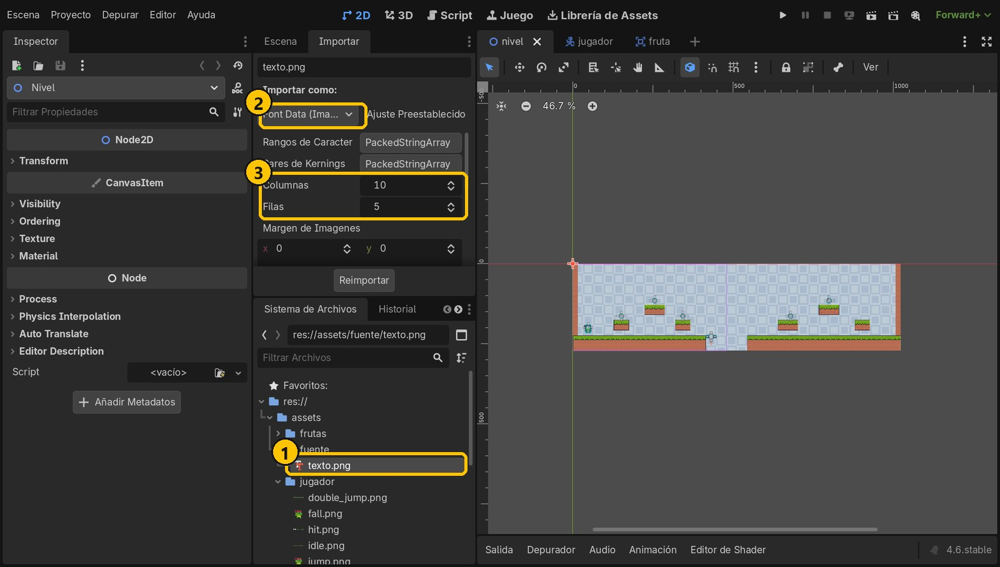
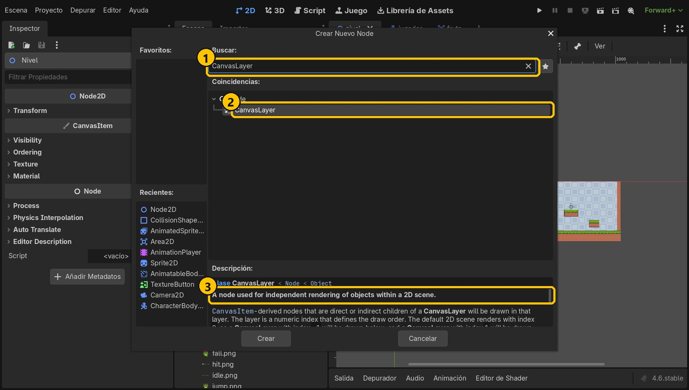
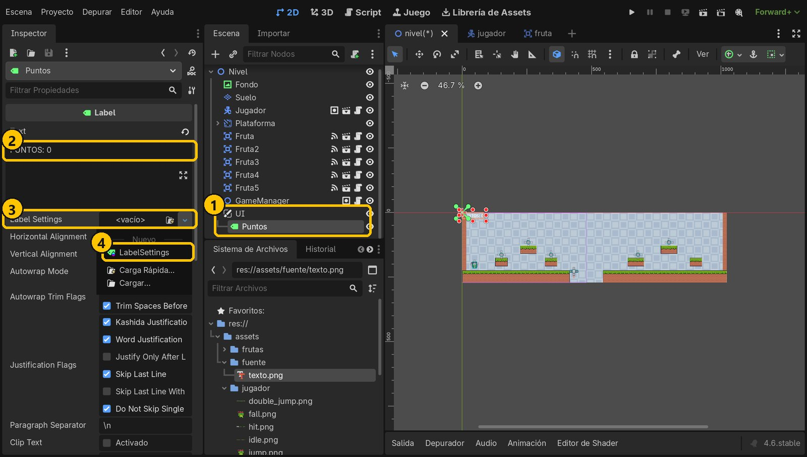
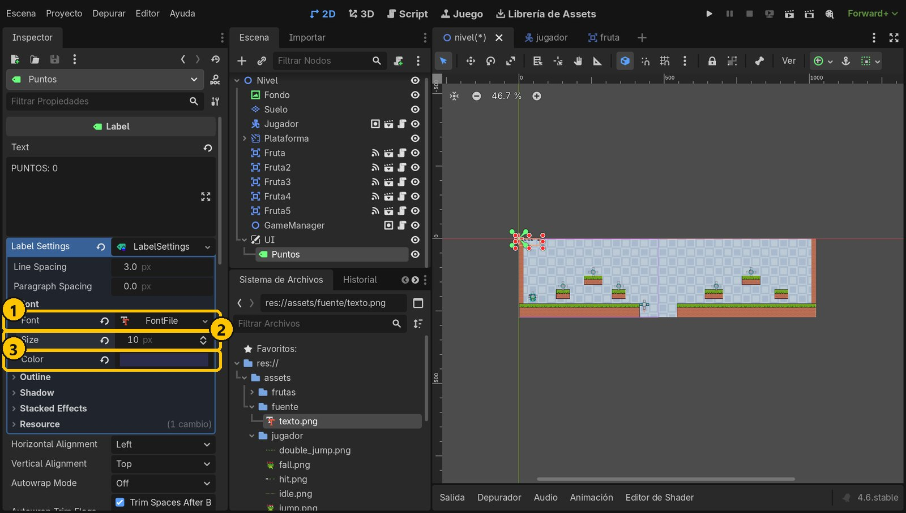
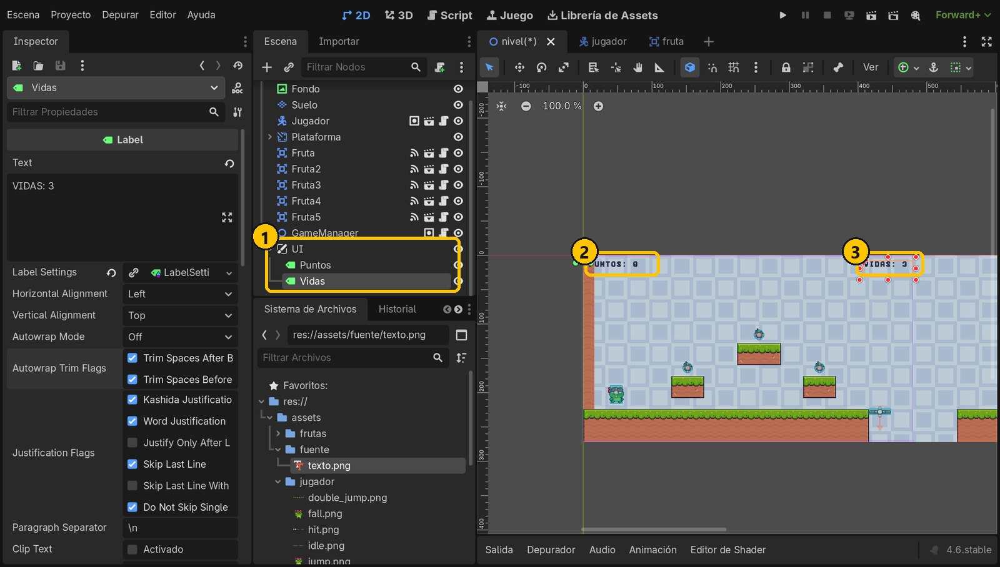
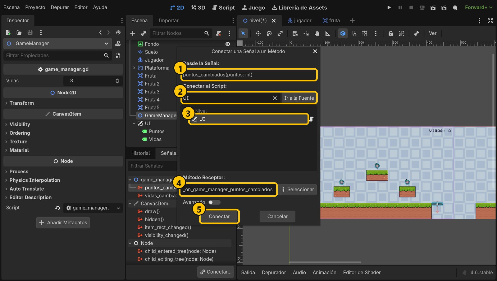
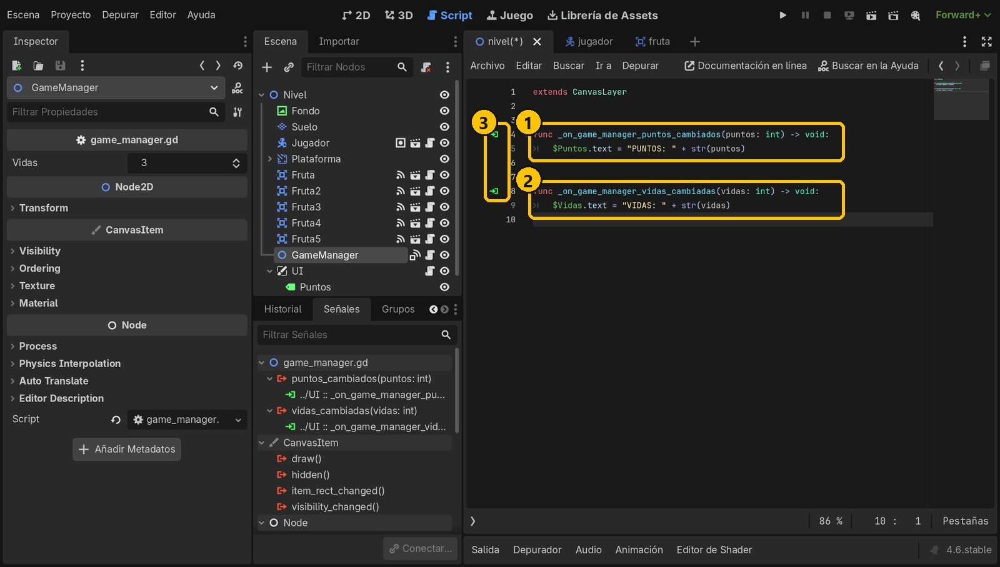
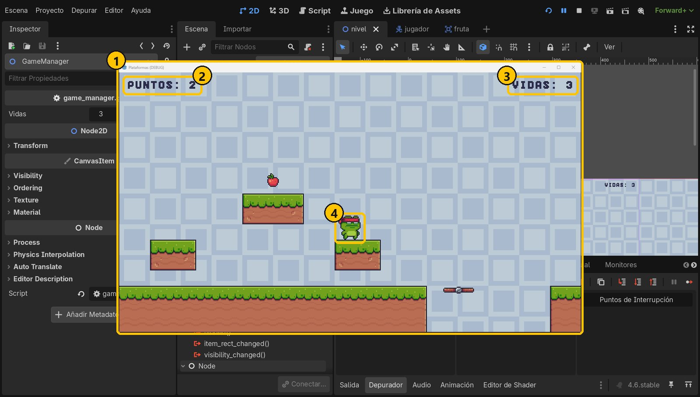

Objetivo
Al terminar verás arriba PUNTOS a la izquierda y VIDAS a la derecha. El marcador no se mueve con la cámara y cambia en cuanto recoges una fruta, porque escucha las señales del GameManager.
Partimos de: El proyecto del tutorial 5 (GameManager con puntos, vidas y señales). Además, la imagen assets/fuente/texto.png ya viene importada como fuente de imagen: una cuadrícula de 10 × 5 letras de 8 × 10 píxeles (solo mayúsculas, números y algunos signos).
Nodos y conceptos
CanvasLayerCapa que se dibuja encima del juego y no se mueve con la cámara. Todo lo que pongas dentro se queda fijo en la pantalla.
LabelNodo de interfaz que muestra un texto. Cambiamos su propiedad text desde el código.
LabelSettingsRecurso con el aspecto del texto: fuente, tamaño, color, contorno… Varios Label pueden compartirlo.
Fuente de imagenUna imagen con las letras dibujadas en cuadrícula que Godot convierte en fuente (pestaña Importar).
Paso a paso
1La fuente pixel del kit
Selecciona assets/fuente/texto.png y mira la pestaña Importar: está importada como Font Data (Image Font), con 10 columnas y 5 filas. Así Godot la usa como una fuente más. Solo tiene mayúsculas.

- 1texto.png
- 2Importada como fuente
- 310 × 5 letras
2Añade un CanvasLayer
En nivel.tscn, selecciona Nivel y añade un CanvasLayer. Llámalo UI: será la capa del marcador, fija en la pantalla.

- 1CanvasLayer
- 2CanvasLayer
- 3Se dibuja aparte
3Un Label para los puntos
Añade a UI un Label llamado Puntos. En Text escribe PUNTOS: 0. En Label Settings elige Nuevo LabelSettings.

- 1UI → Puntos
- 2PUNTOS: 0
- 3Label Settings
- 4Nuevo LabelSettings
4Fuente, tamaño y color
Haz clic en el LabelSettings. En Font arrastra texto.png, pon Size 10 (el tamaño real de las letras, para que se vean nítidas) y un Color oscuro, por ejemplo 2b2b4a, que se lea sobre el cielo.

- 1La fuente pixel
- 2Tamaño 10
- 3Color oscuro
5Coloca las dos etiquetas
En Layout → Transform → Position pon Puntos en 8, 8. Duplica el Label (Ctrl+D), llámalo Vidas, con texto VIDAS: 3 y posición 408, 8. Comparten el mismo LabelSettings.

- 1Puntos y Vidas
- 2Arriba a la izquierda
- 3Arriba a la derecha
6Conecta las señales del GameManager
Añade un script a UI (ui.gd, sin plantilla). Después selecciona GameManager y, en Señales, haz doble clic en puntos_cambiados. Escribe UI en el filtro, elige UI como receptor y pulsa Conectar. Haz lo mismo con vidas_cambiadas.

- 1puntos_cambiados
- 2Busca UI
- 3Receptor: UI
- 4Función nueva
- 5Conectar
7Actualiza los textos
Cada función recibe el valor nuevo y lo escribe en su etiqueta. str() convierte el número en texto para poder unirlo.
extends CanvasLayer
func _on_game_manager_puntos_cambiados(puntos: int) -> void:
$Puntos.text = "PUNTOS: " + str(puntos)
func _on_game_manager_vidas_cambiadas(vidas: int) -> void:
$Vidas.text = "VIDAS: " + str(vidas)
- 1Escribe los puntos
- 2Escribe las vidas
- 3Señales conectadas
8Ejecuta y recoge frutas
Ejecuta y recoge frutas: el marcador sube al momento. Aunque la cámara siga a la rana, las etiquetas se quedan en su sitio, porque están en el CanvasLayer.

- 1El juego
- 2Sube al recoger
- 3Fijo arriba
- 4La cámara se mueve
Resumen
- Un CanvasLayer dibuja la interfaz fija en la pantalla, aunque la cámara se mueva.
- LabelSettings guarda el aspecto del texto, con la fuente pixel del kit.
- Las señales del GameManager avisan a la UI, que solo cambia el texto.
Si algo falla
- Las letras no se ven o salen cuadros vacíos. La fuente solo tiene mayúsculas, números y
. , : ? ! ( ) + -. Escribe el texto en mayúsculas. - El marcador se mueve con la cámara. Los Label deben ser hijos del CanvasLayer UI, no del Nivel.
- El texto se ve borroso. Usa Size 10 (o múltiplos: 20, 30) para que cada píxel de la fuente sea un píxel limpio.
- El marcador no cambia. Comprueba en Señales que
puntos_cambiadostiene debajo la conexión a UI, y que el GameManager haceemit().
Prueba tú
- Pon un contorno al texto: en LabelSettings, Outline con tamaño 2 y color blanco.
- Añade un tercer Label que diga
NIVEL 1centrado arriba. - Pon el marcador dentro de un
HBoxContainerpara que se coloque solo.